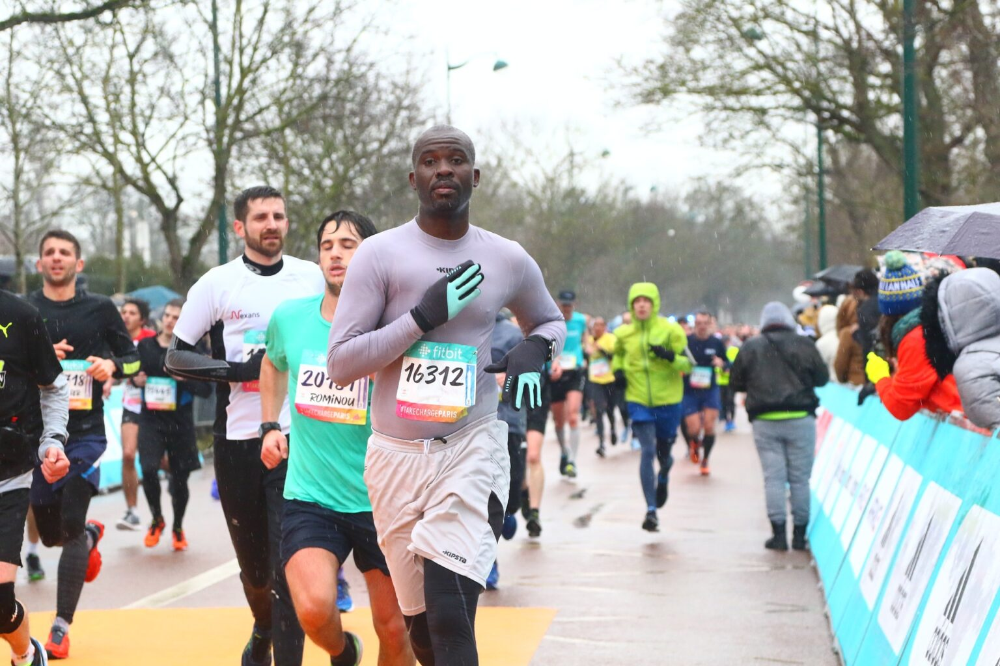
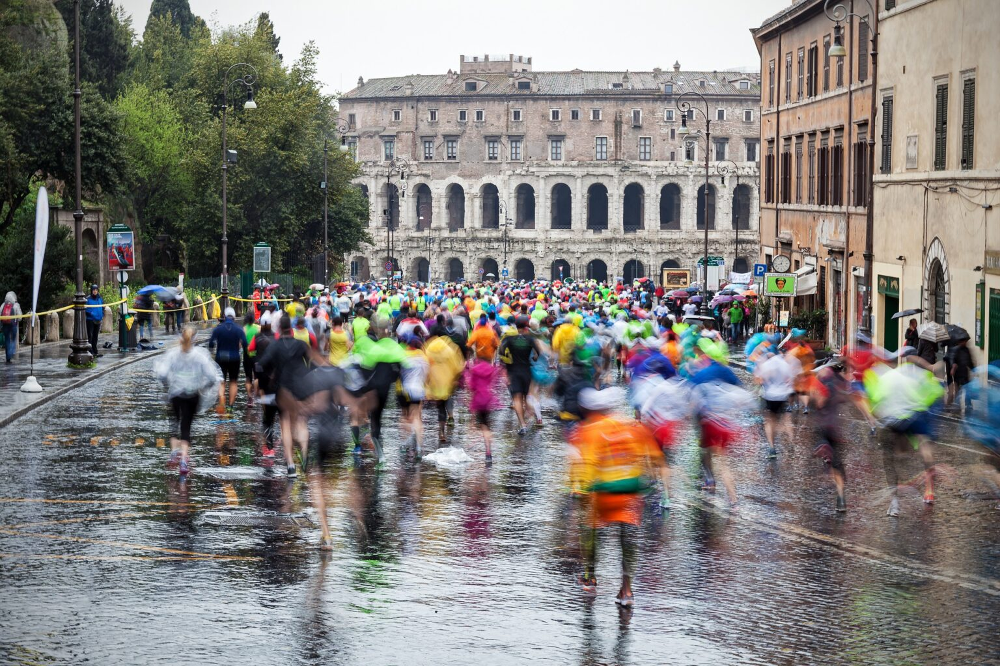
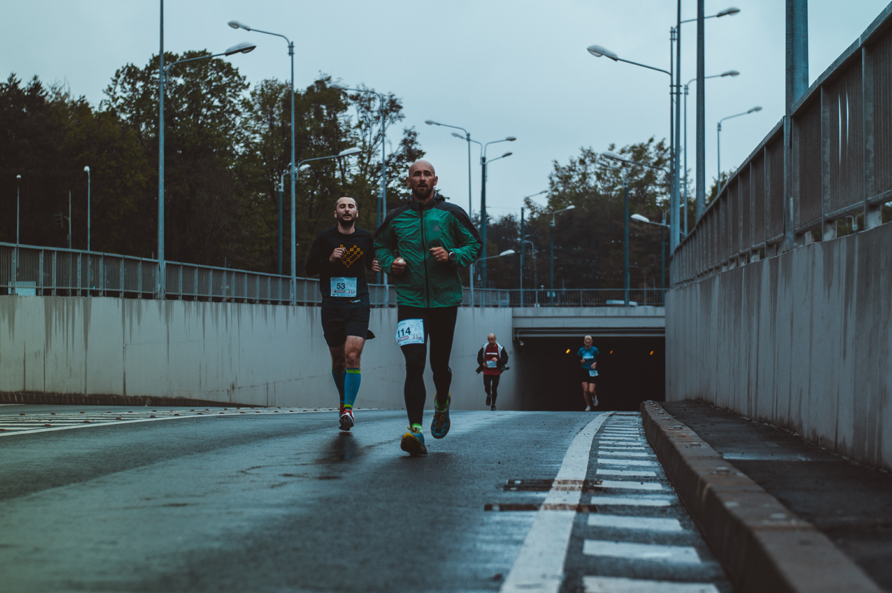
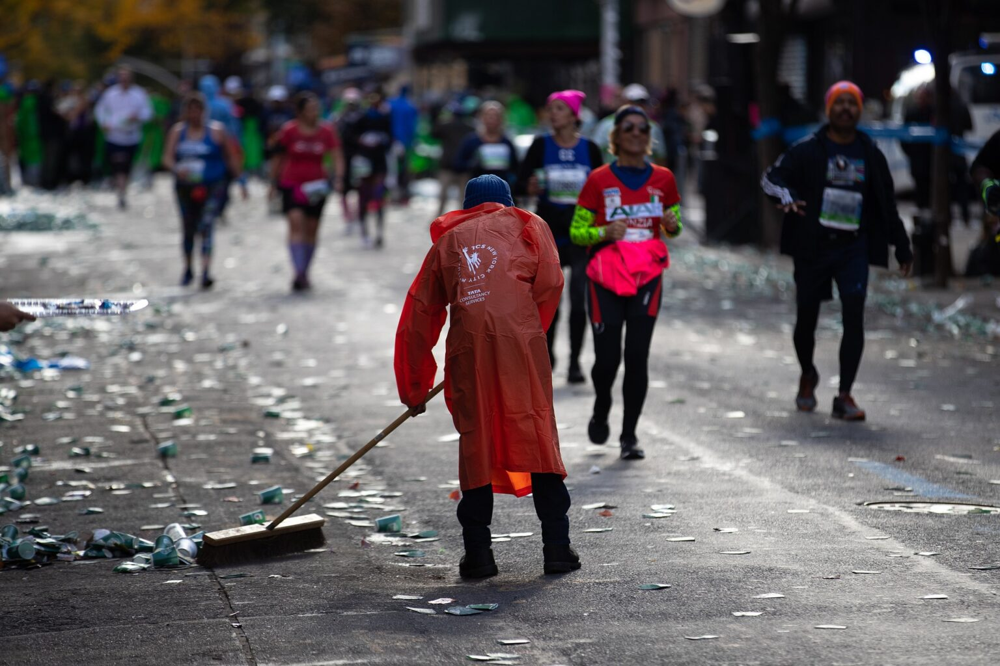
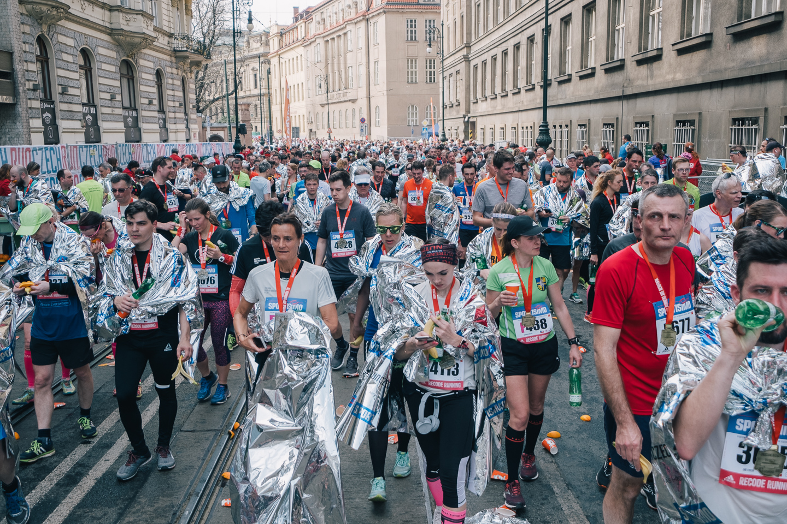

Фактор погоди завжди був важливий на змаганнях: навіть з хорошою підготовкою все може піти не так, коли за бортом несприятливі умови. Найважче даються змагання в спеку, проте й біг на холоді, особливо в комплекті з дощем або сильним вітром, може внести свої корективи.
Чому важко бігати в холодних умовах
Продуктивність значно погіршується в умовах спеки і цілком ймовірно, що вона погіршиться і якщо буде занадто холодно. А за рахунок чого саме? Ось що вдалося з’ясувати в результаті досліджень:
- Організм більше покладається на вуглеводи, а не на жири для отримання енергії.
- Виробництво лактату є вищим при заданій інтенсивності. Це означає, що ви швидше потрапляєте в «кисневий борг», щоб продукувати необхідну енергію для підтримування обраного темпу, про що засвідчив вищий рівень споживання кисню у спортсменів на тренуваннях в умовах низьких температур.
- Повільноскорочувані м’язи менш ефективні. Це означає, що для підтримки швидкості доводиться задіювати швидкоскорочувані м’язові волокна, що, можливо, пояснює вищий рівень утворення лактату.
- Зниження продуктивності на холоді може бути наслідком більш високого вихідного рівня метаболізму, який є одним з механізмів підтримки внутрішньої температури тіла. Передбачається, що метаболізм ніби «краде» частину енергії, яка могла б піти на спортивний результат.
- Вищий ризик зневоднення. Низькі температури збільшують діурез і зменшують спрагу, а втрати рідини при диханні і потовиділенні не зменшуються.
- Фізіологічні зміни стають більш відчутними зі зниженням внутрішньої температури тіла. Бігуни на витривалість особливо вразливі до зниження працездатності в умовах низьких температур через невисокий відсоток вмісту жиру в тілі. Це означає, що критично важливо тримати тіло в теплі під час тренувань в холодну погоду.
Оптимальною температурою для змагань вважається 11-13 градусів.
Ця позначка може варіюватися на кілька градусів залежно від індивідуальних особливостей бігуна.
Ось кілька порад, які допоможуть отримати хороший результат і задоволення від процесу, змагаючись в холодних умовах.
Залишайтеся в теплі до моменту старту
Це потрібно, щоб уникнути переохолодження до того, як ви почнете бігти. Якщо дуже холодно, візьміть з собою одяг, який не шкода викинути — він зігріє вас під час перебування в стартовому коридорі. Якщо прогнозують дощ, візьміть з собою великі пластикові пакети для сміття, які можна носити як одноразовий дощовик.
Залишайтеся в теплі до моменту старту
Це потрібно, щоб уникнути переохолодження до того, як ви почнете бігти. Якщо дуже холодно, візьміть з собою одяг, який не шкода викинути — він зігріє вас під час перебування в стартовому коридорі. Якщо прогнозують дощ, візьміть з собою великі пластикові пакети для сміття, які можна носити як одноразовий дощовик.
Розімніться як слід
Якщо різко почати бігти без попереднього розігріву, є ризик схопити розтягнення, судоми і неприємні травми. Ретельна розминка допоможе поліпшити кровообіг і підготувати м’язи до прийдешніх інтенсивних зусиль.
Якщо ви берете участь в короткому забігу, наприклад, 5 або 10 км, вирушайте за 20-30 хвилин до старту на 15-хвилинну пробіжку підтюпцем, додаючи 4-6 коротких прискорень.
Перед напівмарафоном і марафоном, 10-хвилинна розминка в легкому темпі за 30 хвилин до старту допоможе м’язам розслабитися. Перші кілометри після старту біжіть повільніше, поступово збільшуючи свій темп до запланованого.
Одягайтеся шарами
Багатошаровість в одязі завжди була робочою ідеєю в холодну погоду, адже набагато легше «відкалібрувати» екіпіровку, коли на вас кілька тонких шарів порівняно з одним грубим. Дуже добре, якщо одяг можна трансформувати просто під час бігу — розстебнути блискавку, закотити рукави тощо.
Базовий шар повинен щільно прилягати до тіла і відштовхувати вологу, верх — вітро- і водонепроникним. Переконайтеся, що ваші шкарпетки теж виготовлені з матеріалу, який відводить вологу, щоб ви не змерзли в ноги, коли вони спітніють. Віддавайте перевагу високим моделям, що закривають ахілл.
Було б добре заздалегідь протестувати все, що плануєте одягати на змагання, щоб переконатися, що екіп досить теплий і комфортний.
Загальне правило можна застосувати і до забігів в холодну погоду: одягайтеся так, ніби на вулиці на 10-15 градусів тепліше, ніж насправді. Однак враховуйте, що у вітряний день завжди буде холодніше.
Захищайте кінцівки, обличчя і голову
Під час бігу в холодну погоду на вашому тілі не повинно бути відкритих ділянок — це сприяє швидкій втраті тепла. Щоб захистити голову і руки одягайте головний убір і рукавички, бажано з синтетичного вологовідштовхуючого матеріалу.
Вітер підсилює дію холоду, при вітряній погоді ви ризикуєте отримати легку форму обмороження. Щоб цього не сталося, використовуйте баф чи шарф, щоб прикрити шию та обличчя. Не забувайте про бальзам для губ і живильний крем для обличчя.
Якщо до холоду додався дощ, існує кілька лайфхаків, як полегшити неприємні відчуття:
- Латексні рукавички збережуть руки сухими, оскільки латекс водонепроникний. Як тільки руки намокнуть, ваші пальці можуть боліти. Одягайте латексні рукавички під звичайні бігові.
- Нанесіть вазелін на відкриті ділянки шкіри. Вазелін водостійкий і допоможе зігрітися у вітряну погоду.
Не забувайте про гідратацію
У холодну погоду легко (і небезпечно) пропустити повз увагу свої потреби в рідині. Не дозволяйте сухому повітрю і холоду ввести вас в оману – ви будете втрачати практично стільки ж рідини, як і в теплу погоду. Це означає, що варто дотримуватися звичного режиму поповнення рідини, навіть якщо пити особливо не хочеться. Відсутність спраги не означає, що ви не зневоднені. Низькі температури зменшують відчуття спраги, тому покладатися на відчуття — не найнадійніша схема.
У холодні дні гелі теж можуть замерзнути. Спакуйте їх досить близько до тіла, щоб вони залишалися в теплі і не довелося їх розжовувати під час бігу.
Прислухайтеся до сигналів тіла
Низькі температури уповільнюють кровообіг, що може зумовити неприємні відчуття в м’язах і навіть судоми. Ви можете відчувати скутість, особливо на початку забігу, і якщо спробувати збільшити темп — можна пошкодити м’язи. Виберіть такий темп, щоб дати тілу додатковий час для розігріву.
Остерігайтеся гіпотермії і обмороження
Переохолодження виникає, коли температура тіла опускається нижче 35 градусів. Симптоми можуть включати сплутаність свідомості і неконтрольоване тремтіння.
Обмороження виникає при обмеженні кровообігу в кінцівках — зазвичай це пальці рук, ніг, вуха і ніс. Симптоми можуть включати відчуття оніміння, поколювання, біль, побіління чи посиніння. Під час бігу будьте уважні і відстежуйте перші прояви симптомів.
Виходьте на старт з правильним настроєм
Від вашого налаштування на забіг дійсно залежить багато чого. Прийміть виклик, посміхніться і отримуйте задоволення від усього, що принесе день, навіть якщо це замерзлі вії чи наскрізь промоклий одяг.
Як і в будь-якій гонці, зосередьтеся на тому, що ви можете контролювати, прийміть дискомфорт і зробіть те, що максимально зможете в цих умовах. Будьте реалістичні з очікуваннями — у більшості спортсменів не найкращі результати в несприятливих погодних умовах.
Якомога швидше зігрійтеся після фінішу
Через деякий час після старту ви розігрієтеся і забудете, як холодно на вулиці. Але відразу після зупинки згадайте, що погодні умови далекі від приємних. Після перетину фінішної арки постарайтеся якомога швидше утеплитися.
За потреби скористайтеся ізофолією (рятувальна ковдра з фольги), яку видають фінішерам на багатьох великих забігах — загорніться в неї, поки будете повертатися до машини, камери схову чи дорогою туди, де тепло.
Відразу переодягніться в теплі сухі речі, не забудьте про вовняні шкарпетки і головний убір — тепло сприяє хорошій циркуляції крові, а значить допоможе м’язам швидше відновитися, плюс знижується ризик застудитися.
Зігрійтеся гарячим напоєм і похваліть себе за складний старт, незалежно від результату.